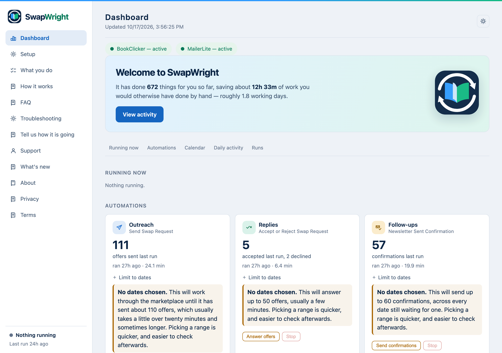
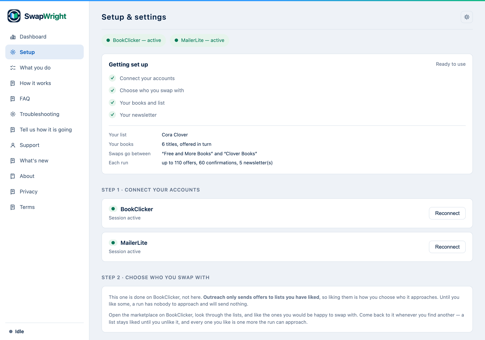

Newsletter swaps, handled.
For indie authors who run newsletter swaps. If you trade promotions with other authors through BookClicker and send with MailerLite, SwapWright does the repetitive part: finding partners, answering their offers, building your newsletter draft and telling every author their book went out.
See how it works Free for 14 days, then $10.99 a month unless you cancel.Cancel any time from the link in your receipt. Requires a Mac with Apple Silicon (M1 or later).
The four jobs it does
Outreach
Works through the lists you have liked on BookClicker, judges which are worth a feature and which a mention, and sends each one an offer — rotating through your books so no title is pushed at every partner.
Replies
Answers the offers that come back, accepting the strongest and declining the ones that would waste your best slot, with the numbers behind every decision.
Newsletter
Builds the draft for a fully booked date — every cover, link, title and blurb, placed in your own template. Then it reopens the saved draft and checks it against what is booked.
Follow-ups
Emails every author you promoted with a link to the newsletter their book appeared in.
What it looks like


Who it is for
Authors who already swap newsletter promotions with other authors and want the admin to stop eating an evening a week. It suits you if you have your own mailing list, you book swaps through BookClicker, and you send your newsletter with MailerLite. Any genre — it reads your own newsletter rather than assuming a layout.
It is not for you if you do not run swaps, if your list lives somewhere other than MailerLite, or if you are on an Intel Mac.
How you get it
- Start the trial. You give card details but are not charged. Lemon Squeezy handles the payment and emails your receipt.
- The receipt carries a download link and your licence key. There is nothing to collect from anywhere else.
- Download the .dmg and drag SwapWright to Applications. It is about 400 MB, because it brings its own browser engine rather than asking you to install one.
- Open it. It just opens. SwapWright is signed with an Apple Developer ID and notarized by Apple, so macOS does not warn about it and there is nothing to approve.
- Paste your licence key into Setup, then work down the four steps: sign in to BookClicker and MailerLite, like the lists you want to swap with, add your book titles, and let it read your newsletter.
After the 14 days you are charged $10.99 a month until you cancel. Cancel any time from the link in your receipt — the app keeps working until the end of the period you have paid for, then the automations stop. Your settings, sign-ins and run history stay on your computer either way.
What it does not do
- It does not send newsletters. Only you do that.
- It does not touch a newsletter already scheduled in your outbox.
- It does not buy paid placements. Free swaps only.
- It does not send anything to us. Your settings, sign-ins and history stay on your computer — there is no SwapWright server and no tracking.
What you need
- A Mac with Apple Silicon (M1 or later). It does not run on Intel Macs.
- Your own BookClicker and MailerLite accounts.
- About ten minutes to set up: sign in to both, like the lists you want to swap with on BookClicker, add your book titles, and let it read your newsletter.
Honest about the state of it
This is version 1.0. It has run for months against one author's accounts and thousands of offers, and it is being sold now so it can meet more than one newsletter template. If something does not fit yours, write to support — that is the point of this stage, and the first 14 days are free.